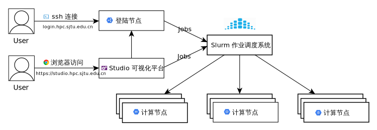

Slurm 作业调度系统¶
SLURM （Simple Linux Utility for Resource Management）是一种可扩展的工作负载管理器，已被全世界的国家超级计算机中心广泛采用。 它是免费且开源的，根据GPL通用公共许可证发行。
本文档将协助您通过 Slurm 管理作业。 在这里可以找到更多的工作样本。
如果我们可以提供任何帮助，请随时联系 HPC 邮箱。
Tip
由于跨系统文本编码的问题，我们强烈建议您只用英文字符和数字命名文件夹和目录，并且不要使用特殊字符，以确保作业能顺利运行。
Slurm 概览¶
Slurm |
功能 |
|---|---|
sinfo |
集群状态 |
squeue |
排队作业状态 |
sbatch |
作业提交 |
scontrol |
查看和修改作业参数 |
sacct |
已完成作业报告 |
scancel |
删除作业 |
sinfo 查看集群状态¶
Slurm |
功能 |
|---|---|
|
查看节点级信息 |
|
查看可用节点信息 |
|
查看队列信息 |
|
查看所有选项 |
节点状态包括：
drain(节点故障)，alloc(节点在用)，idle(节点可用)，down(节点下线)，mix(节点部分占用，但仍有剩余资源）。
查看总体资源信息：
$ sinfo
PARTITION AVAIL TIMELIMIT NODES STATE NODELIST
cpu up 7-00:00:0 656 idle cas[001-656]
dgx2 up 7-00:00:0 8 idle vol[01-08]
squeue 查看作业信息¶
Slurm |
功能 |
|---|---|
|
查看作业信息 |
|
查看细节信息 |
|
查看特定节点作业信息 |
|
查看USER_LIST的作业 |
|
查看特定状态的作业 |
|
查看所有的选项 |
作业状态包括R(正在运行)，PD(正在排队)，CG(即将完成)，CD(已完成)。
默认情况下，squeue只会展示在排队或在运行的作业。
$ squeue
JOBID PARTITION NAME USER ST TIME NODES NODELIST(REASON)
18046 dgx2 ZXLing eenl R 1:35:53 1 vol04
17796 dgx2 python eexdl R 3-00:22:04 1 vol02
显示您自己账户下的作业：
squeue
JOBID PARTITION NAME USER ST TIME NODES NODELIST(REASON)
17923 dgx2 bash hpcwj R 1-12:59:05 1 vol05
-l选项可以显示更细节的信息。
squeue
JOBID PARTITION NAME USER STATE TIME TIME_LIMI NODES NODELIST(REASON)
17923 dgx2 bash hpcwj RUNNING 1-13:00:53 30-00:00:00 1 vol05
SBATCH 作业提交¶
准备作业脚本然后通过sbatch提交是 Slurm 的最常见用法。
为了将作业脚本提交给作业系统，Slurm 使用
$ sbatch jobscript.slurm
Slurm 具有丰富的参数集。 以下最常用的。
Slurm |
含义 |
|---|---|
|
总进程数 |
|
每台节点上的进程数 |
|
作业队列 |
|
作业名 |
|
标准输出文件 |
|
标准错误文件 |
|
作业最大运行时长 |
|
独占节点 |
|
通知类型，可选 all, fail, end，分别对应全通知、故障通知、结束通知 |
|
通知邮箱 |
|
偏好的作业节点 |
|
避免的作业节点 |
|
作业依赖 |
|
序列作业 |
这是一个名为cpu.slurm的作业脚本，该脚本向cpu队列申请1个节点40核，并在作业完成时通知。在此作业中执行的命令是/bin/hostname。
#!/bin/bash
#SBATCH --job-name=hostname
#SBATCH --partition=cpu
#SBATCH -N 1
#SBATCH --mail-type=end
#SBATCH --mail-user=YOU@EMAIL.COM
#SBATCH --output=%j.out
#SBATCH --error=%j.err
/bin/hostname
用以下方式提交作业：
sbatch cpu.slurm
squeue可用于检查作业状态。用户可以在作业执行期间通过SSH登录到计算节点。输出将实时更新到文件[jobid]
.out和[jobid] .err。
这里展示一个更复杂的作业要求，其中将启动80个进程，每台主机40个进程。
#!/bin/bash
#SBATCH --job-name=LINPACK
#SBATCH --partition=cpu
#SBATCH -n 80
#SBATCH --ntasks-per-node=40
#SBATCH --mail-type=end
#SBATCH --mail-user=YOU@EMAIL.COM
#SBATCH --output=%j.out
#SBATCH --error=%j.err
以下作业请求4张GPU卡，其中1个CPU进程管理1张GPU卡。
#!/bin/bash
#SBATCH --job-name=GPU_HPL
#SBATCH --partition=dgx2
#SBATCH -n 4
#SBATCH --ntasks-per-node=4
#SBATCH --gres=gpu:4
#SBATCH --mail-type=end
#SBATCH --mail-user=YOU@MAIL.COM
#SBATCH --output=%j.out
#SBATCH --error=%j.err
以下作业启动一个3任务序列（从0到2），每个任务需要1个CPU内核。关于集群上的Python，您可以查阅我们的Python文档。
#!/bin/bash
#SBATCH --job-name=python_array
#SBATCH --mail-user=YOU@MAIL.COM
#SBATCH --mail-type=ALL
#SBATCH --ntasks=1
#SBATCH --time=00:30:00
#SBATCH --array=0-2
#SBATCH --output=python_array_%A_%a.out
#SBATCH --output=python_array_%A_%a.err
module load miniconda2/4.6.14-gcc-4.8.5
source activate YOUR_ENV_NAME
echo "SLURM_JOBID: " $SLURM_JOBID
echo "SLURM_ARRAY_TASK_ID: " $SLURM_ARRAY_TASK_ID
echo "SLURM_ARRAY_JOB_ID: " $SLURM_ARRAY_JOB_ID
python < vec_${SLURM_ARRAY_TASK_ID}.py
srun 和 salloc 交互式作业¶
srun可以启动交互式作业。该操作将阻塞，直到完成或终止。例如，在计算主机上运行hostname。
$ srun -N 1 -n 4 -p small hostname
cas006
启动远程主机bash终端：
srun -p small -n 4 --exclusive --pty /bin/bash
或者，可以通过salloc请求资源，然后在获取节点后登录到计算节点：
salloc -N 1 -n 4 -p small
ssh casxxx
scontrol: 查看和修改作业参数
Slurm |
功能 |
|---|---|
scontrol show job JOB_ID |
查看排队或正在运行的作业的信息 |
scontrol hold JOB_ID |
暂停JOB_ID |
scontrol release JOB_ID |
恢复JOB_ID |
scontrol update dependency=JOB_ID |
添加作业依赖性 ，以便仅在JOB_ID完成后才开始作业 |
scontrol hold 命令可使排队中尚未运行的作业暂停被分配运行，被挂起的作业将不被执行。scontrol release 命令可取消挂起。
sacct 查看作业记录
Slurm |
功能 |
|---|---|
|
查看详细的帐户作业信息 |
|
查看具有特定状态的作业的帐号作业信息 |
|
在指定时间后选择处于任意状态的作业 |
|
使用给定的LAYOUT自定义sacct输出 |
|
查看所有选项 |
默认情况下，sacct显示过去 24小时 的帐号作业信息。
$ sacct
查看更多的信息：
$ sacct --format=jobid,jobname,account,partition,ntasks,alloccpus,elapsed,state,exitcode -j 3224
查看平均作业内存消耗和最大内存消耗：
$ sacct --format="JobId,AveRSS,MaxRSS" -P -j xxx
Slurm环境变量¶
Slurm |
功能 |
|---|---|
$SLURM_JOB_ID |
作业ID |
$SLURM_JOB_NAME |
作业名 |
$SLURM_JOB_PARTITION |
队列的名称 |
$SLURM_NTASKS |
进程总数 |
$SLURM_NTASKS_PER_NODE |
每个节点请求的任务数 |
$SLURM_JOB_NUM_NODES |
节点数 |
$SLURM_JOB_NODELIST |
节点列表 |
$SLURM_LOCALID |
作业中流程的节点本地任务ID |
$SLURM_ARRAY_TASK_ID |
作业序列中的任务ID |
$SLURM_SUBMIT_DIR |
工作目录 |
$SLURM_SUBMIT_HOST |
提交作业的主机名 |